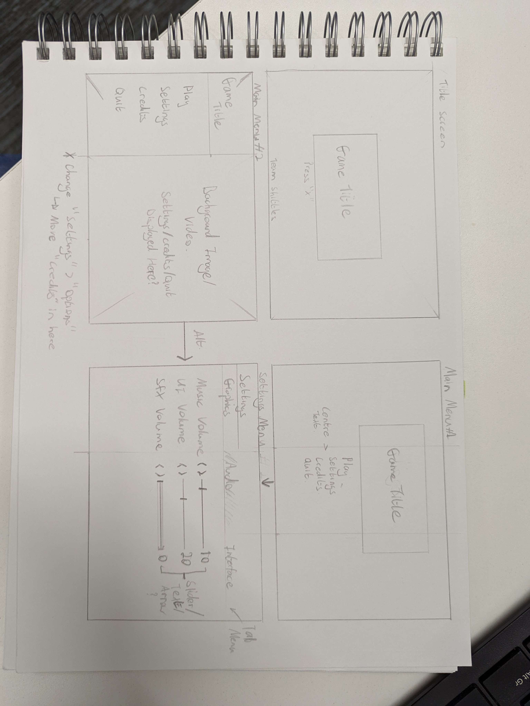
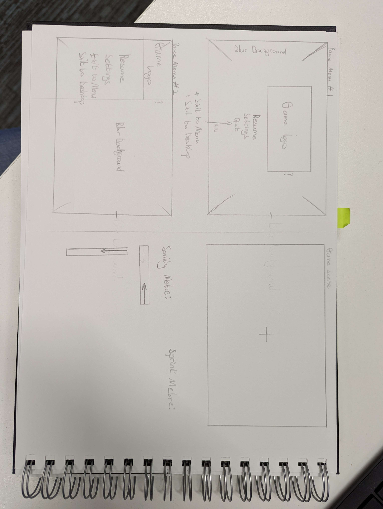
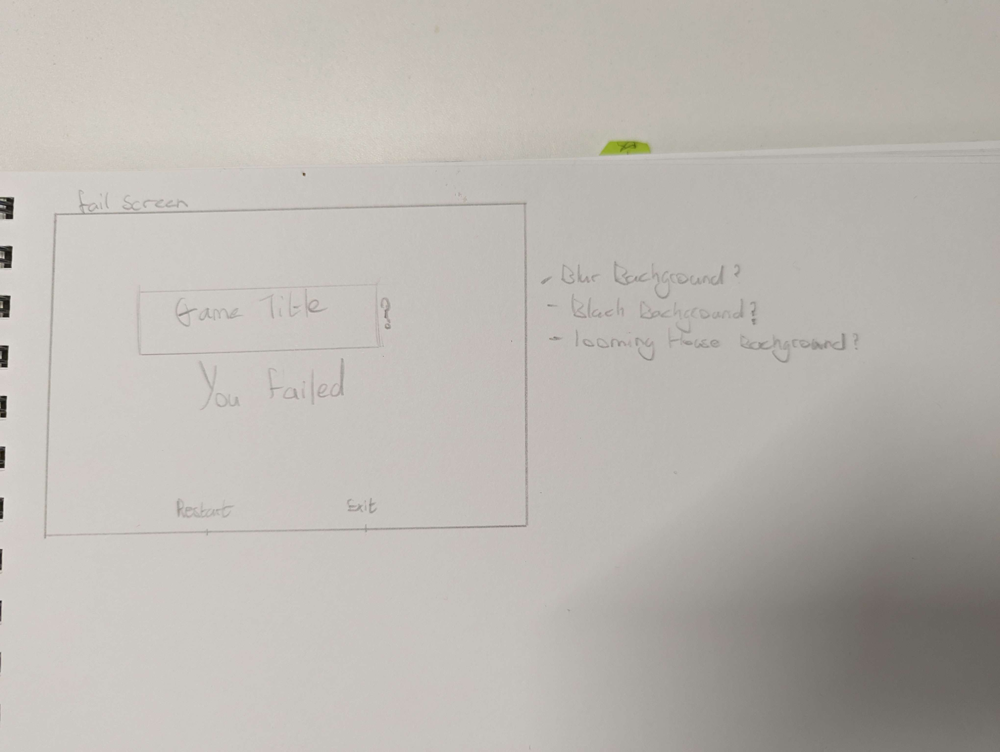

Whispers of Home is a first-person horror title. Players make their way through an atmospheric forest with only their torch and the voices in their head to guide them. Be cautious of the bog and what lurks below and in the shadows!
This project was created for the AGDS Halloween Game Jam in 2022, we were a team of 6, 5 of which were 4th year students and 1 1st year student.
Designer: I helped Design the core gameplay mechanics for this project as well as plan the UX/UI in this project
Social Manager: Managed the Itch.io page for this project.
Click the image below to be redirected to the Project Itch Page.
UX Flow-Chart for Game Systems and User Interface.
User Interface Paper Mock-ups
  